图论基本概念
图论中的基本概念
图的基本概念
- 图：具有顶点集\(V\)的图亦称为\(V\)上的图(a graph on V)，图\(G\)的顶点集记为\(V(G)\), 边集记为\(E(G)\)；
- 邻接Adjacency：如果\({x,y}\)是\(G\)的一条边，则称两个顶点\(x\)和\(y\)是相邻的(adjacent)或邻点 (neighbour)，\(x,y\)称为边的endpoint；如果两条边\(e \ne f\)有一个公共端点，则称\(e\)和\(f\)是相邻的；
- 领域、邻点集Neiborhood：The set of all neighbors of a vertex \(v\) of \(G = (V,E)\), denoted by \(N(v)\), is called the neighborhood of \(v\). 即顶点\(v\)的所有邻点构成的集合。If \(A\) is a subset of \(V\) , we denote by \(N(A)\) the set of all vertices in G that are adjacent to at least one vertex in \(A\). So,\(N(A)=\bigcup_{\nu\in A}N(\nu)\).
- 度：A vertex with degree \(0\) is called isolated.(孤立点); A vertex of degree \(1\) is called pendant.(悬挂点);
- 生成子图Spanning subgraph：删边不删点；
- 导出子图Induced subgraph：若\(G' \subset G\)且\(G'\)包含了\(E\)中所有满足\(x,y \in E\)的边\(xy\),则称\(Q\)是\(G\)的导出子图(induced subgraph)；（人话，删点不删边）；
- 图的收缩The contraction of G：
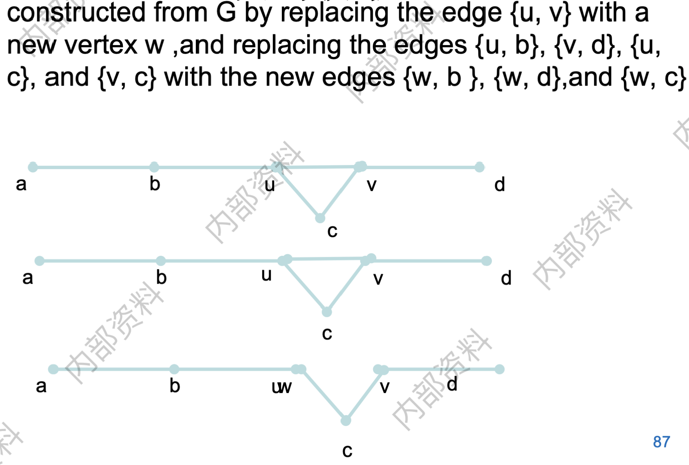
- 补图Graph complement：相对于完全图的补
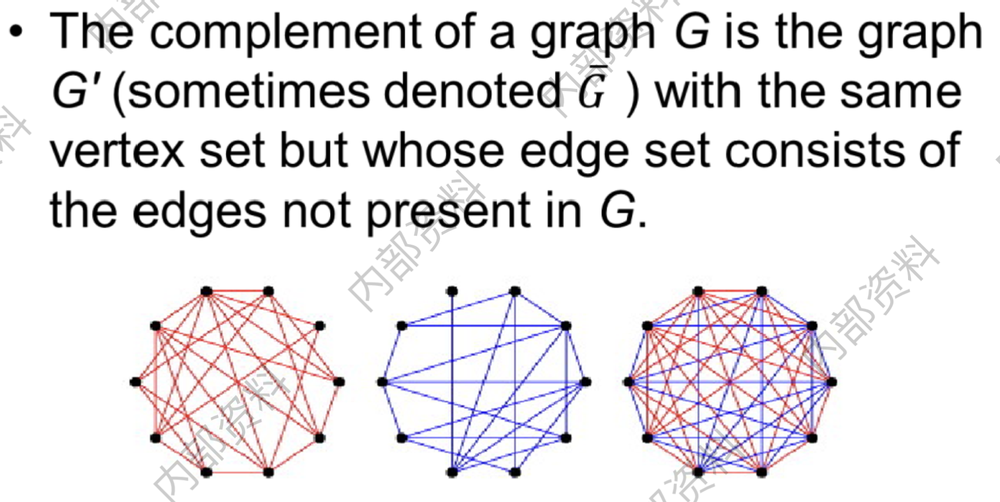
- 关联矩阵Incidence matrices：
 即第\(i\)行表示第\(i\)个顶点与哪些边连接，第\(j\)列表示第\(j\)条边连接哪些顶点。
即第\(i\)行表示第\(i\)个顶点与哪些边连接，第\(j\)列表示第\(j\)条边连接哪些顶点。
握手定理Handshaking Theorem：
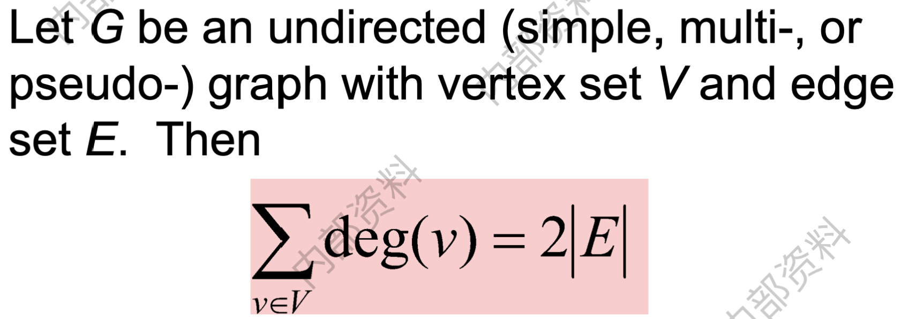
无向图中，如果有度为奇数的点，那么这些点的个数必为偶数个。
- 有向图的度：The in-degree of \(v\), \(deg^- (v)\), is the number of edges going to \(v\)(入度); The out-degree of \(v\), \(deg^+ (v)\), is the number of edges coming from \(v\)(出度); The degree of \(v\), \(deg(v):deg^-(v)+deg^+ (v)\), is the sum of v’s in-degree and out-degree.
有向图握手定理：
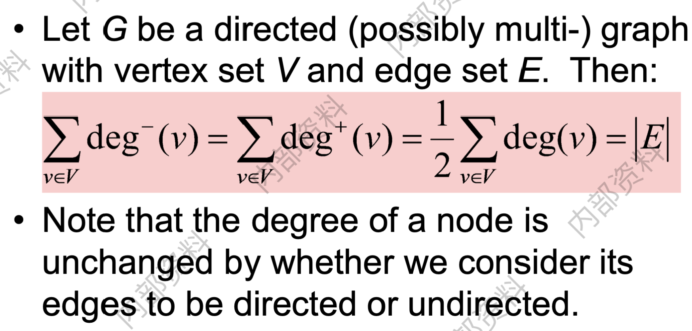
- 阶：一个图的顶点个数称为它的阶(order),记为\(\left | G \right |\)，它的边数记为\(\Vert G \Vert\)；
- 平凡图：阶为0或1的图称为平凡的 (trivial)；
- 独立：互不相邻的顶点/边称独立顶点/独立边(independent vertex/edge)。若一个顶点集或边集中没有两个元素是相邻的，则该集合称为独立集(independent set)；独立的顶点集也称作稳定集(stable set)；
一些特殊的图结构Special Graph Structures
- 完全图\(K^n\)：若\(G\)的所有顶点都是两两相邻的，则称\(G\)是完全的(complete)，n个顶点的完全图记为\(K^n\)；
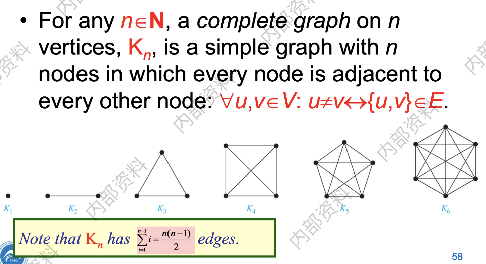
- 环图\(C^n\)：
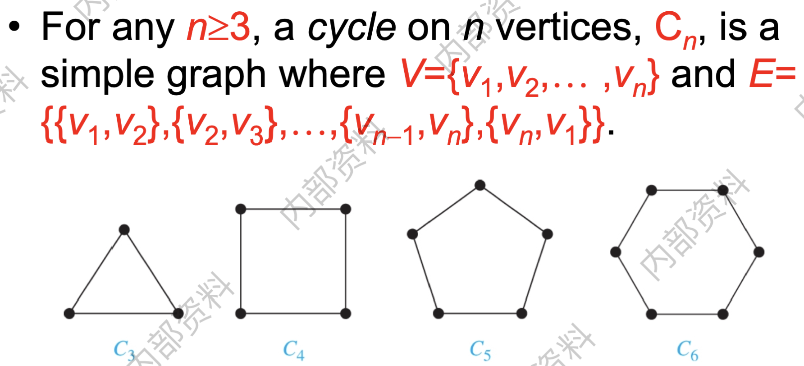
- 轮图\(W^n\)：
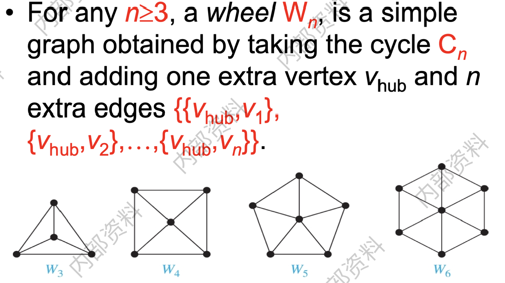
\(W^n\)有\(n+1\)个顶点，中心点度为\(n-1\)，边上\(n\)个点度为\(3\)。 - n维体图 n-Cubes/hypercubes\(Q^n\)：
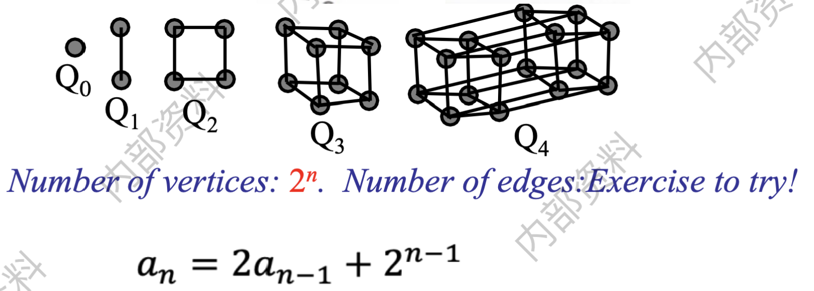
- Plato graphs（柏拉图图）：

- 彼德森图（Petersen）：
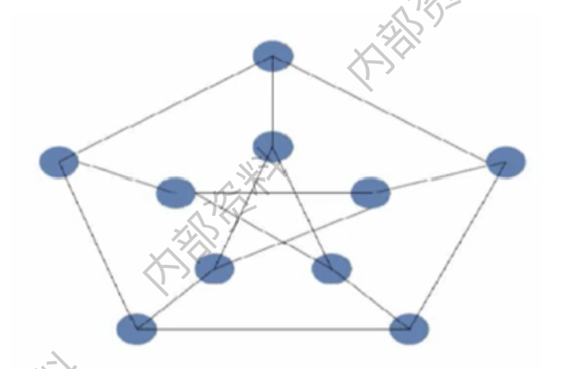
- Bipartite Graphs二分图：
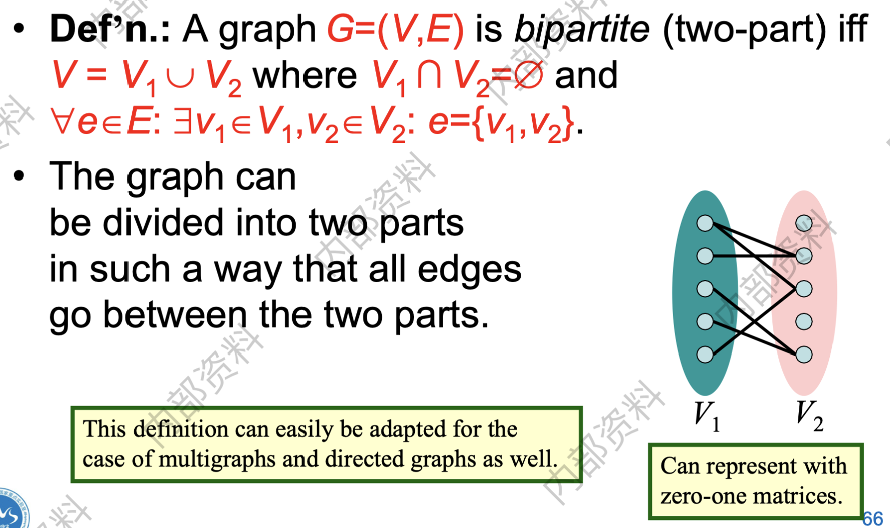
判断方法：1. 可以用两种颜色染色； 2. 图中不存在长度为奇数的回路； - Complete Bipartite Graphs 完全二分图：
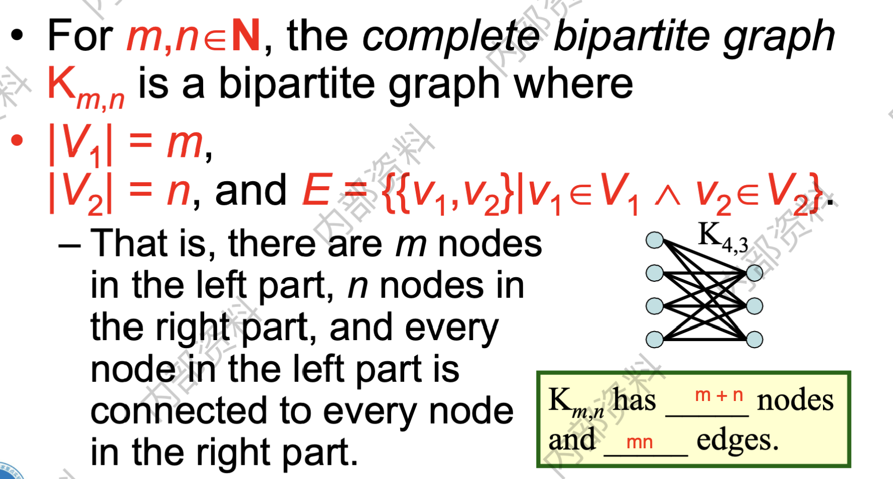
图的同构Graph Isomorphism
- 图的同构：
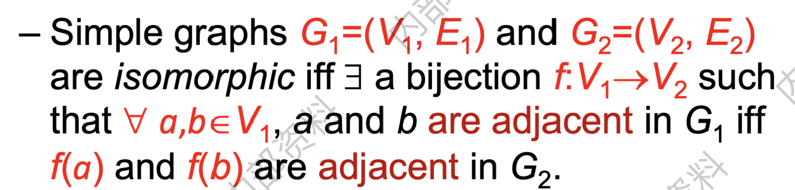
- 图不变量graph invariants：对于图上的一个映射，如果对每个同构图它均取相同的值，则这样的映射称为一个图不变量(graph invariant)。一个图的顶点数和边数就是两个简单的图不变量；图中两两相邻的最大顶点数也是图不变量。
图的连通性Connectivity
- 路：这里所有的\(x_i\)均互不相同，顶点\(x_0和\)\(x_n\)由路\(P\)连接(link)，并称它们为路的端点(endvertex)或顶端(end)；而\(x_1,x_2,\dots,x_{n-1}\)称为\(P\)的内部(inner)顶点。一条路上的边数称为路的长度(length)，长度为k的路记为\(P^k\)；
- 简单路：A path is simple if it contains no edge more than once.
- 独立路：如果其中任意一条路不包含另一条路的内部顶点, 则称它们是独立路(independent path)；
- 连通图：如果非空图\(G\)中的任意两个顶点之间均有一条路相连，我们称\(G\)是连通的(connected)；
- 连通分支/独立子图Connected component：设\(G = (V,E)\)是一个图，则它的极大连通子图称为分支(component)；
- 割点cut vertex：the removal from a graph of a vertex and all incident edges produces a subgraph with more connected components.
- 割边cut edge：an edge whose removal produces a graph with more connected components；
- 点连通度：使得G是k-连通的最大整数k称为G的连通度(connectivity)，并记为\(\kappa (G)\)；
- 边连通度：记为\(\lambda(G)\)；
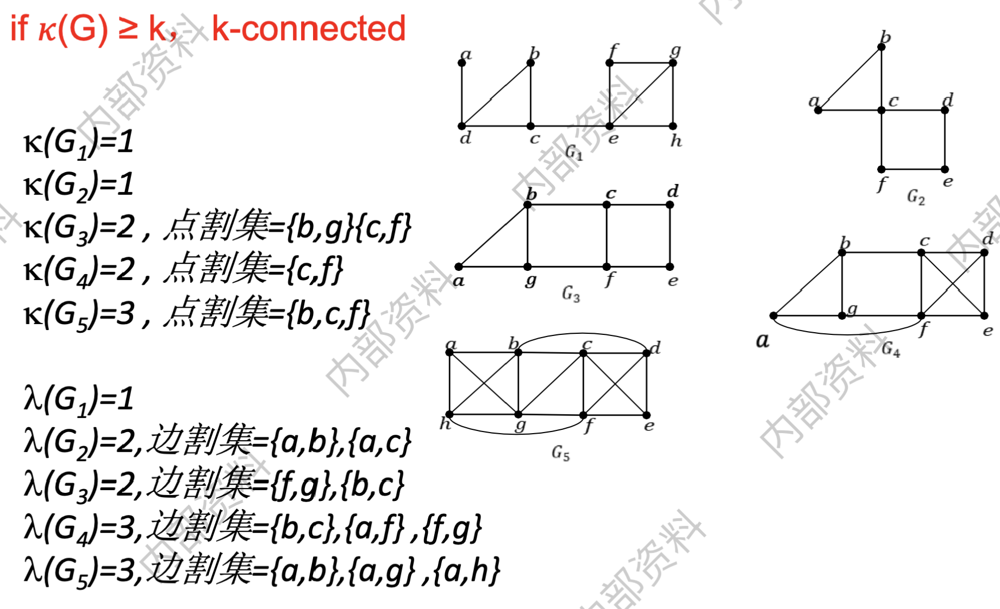
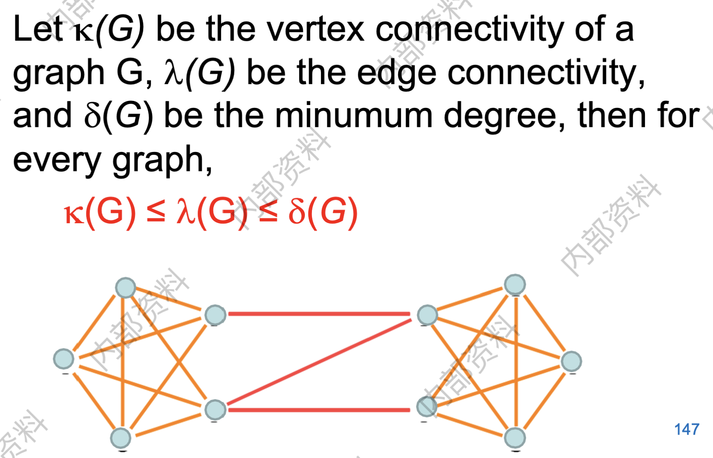
- 有向图中的强连通、弱连通：强连通要求A directed graph is strongly connected if there is a path from a to b and from b to a whenever a and b are vertices in the graph. 弱连通与无向图类似；
- 圈：\(x_0x_1\dots x_{k-1}x_0\)；
- 围长和圈长：图\(G\)中最短圈的长度叫做围长(girth),记为\(g(G)\),而\(G\)中最长圈的长度称为周长(circumference)；
- 弦：图中不在圈上但连接圈中两个顶点的边称为这个圈的弦(chord)；
- 导出圈：\(G\)的导出圈(induced
cycle)是不含弦的圈，即\(G\)的导出子图是个圈；
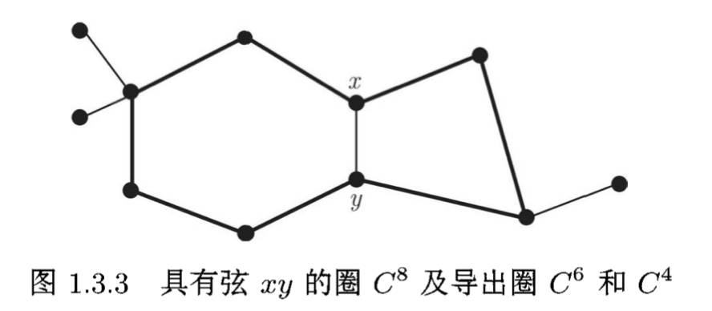
- 距离、直径、中心点、半径：暂略；
- 树、森林：暂略；
本博客所有文章除特别声明外，均采用 CC BY-NC-SA 4.0 许可协议。转载请注明来源 YokumiのBlog！